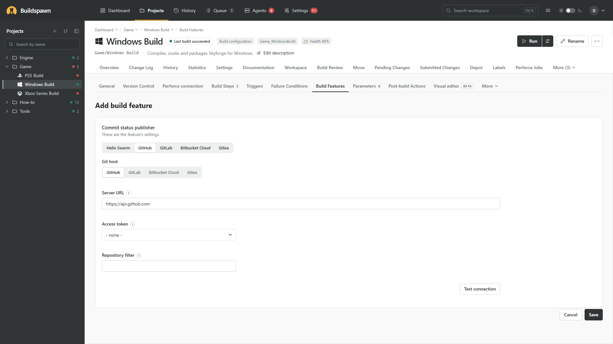

Commit status publisher
Tells your code host or review tool whether a build passed, so people see the result next to the commit or review.
In the list of build features this is called Commit status publisher for Git hosts.
When to use it
Use it when people review changes before they merge, and you want a green or red mark on the change itself. It supports Helix Swarm (for Perforce) and GitHub, GitLab, Bitbucket Cloud and Gitea (for Git).

How to set it up
- Open the build configuration, click Settings, then Build Features. Click Add build feature and choose Commit status publisher.
- At the top, choose the publisher: Helix Swarm, GitHub, GitLab, Bitbucket Cloud or Gitea.
- Fill in the fields for that publisher (see the tables).
- Click Save.
Every field
Git hosts: GitHub, GitLab, Bitbucket Cloud, Gitea
| Field | What it does | Default | Example |
|---|---|---|---|
| Git host | Which host receives the status. | The one you picked | GitHub |
| Server URL | The address of the REST API. Fill it only for GitHub Enterprise, or a self-hosted GitLab or Gitea. Empty uses the default of the host: https://api.github.com, https://gitlab.com/api/v4, https://api.bitbucket.org/2.0 or https://gitea.com/api/v1. | Host default | https://git.studio.example/api/v1 |
| Access token | A Secret text credential that holds the access token. It is read when the build runs and is sent in a request header. It is never shown or written to the log. | None (required) | git-status-token |
| Repository filter | Optional. A status is sent only for checkouts whose repository URL contains this text. Empty sends it for every version control root. | Empty | skyforge-game |
| Test connection | A button that checks the host, the address and the token. | - | - |
Helix Swarm
| Field | What it does | Default | Example |
|---|---|---|---|
| Swarm server | The Swarm server to report to. | None (required) | swarm.studio.example |
| Code review comments | Also post the result as a comment on the review, besides its Tests section. | Off | On |
| Create Swarm test | A button that makes the test definition in Swarm. It needs a Swarm administrator. It adds the test to the Global Workflow, On Update, blocking nothing. Without an administrator, make the test in Swarm by hand. | - | - |
The same Swarm setting is also available as Publish build status to Helix Swarm in the job settings.
A worked example
The Skyforge launcher is in Git on a self-hosted Gitea. The studio picks Gitea, sets Server URL to https://git.studio.example/api/v1, and chooses the credential gitea-status-token. Every pull request now shows a Buildspawn status: build passed.
What you see when it runs
When the build starts, the status is pending. When it ends it becomes success, failure or error, with a link back to the build. The summary on the Build Features tab shows Build status on Gitea.
Problems and fixes
| Problem | What to do |
|---|---|
| Choose an access token | The token field is empty. Add a Secret text credential and pick it. |
| Choose a Swarm server | Pick the server from the list. An administrator adds Swarm servers in the global settings. |
| Test connection fails | Check the address of the API (it must end in the API path), and that the token may write commit statuses. |
| No status appears | The status is sent for each checkout of a version control root. Check the Repository filter. |